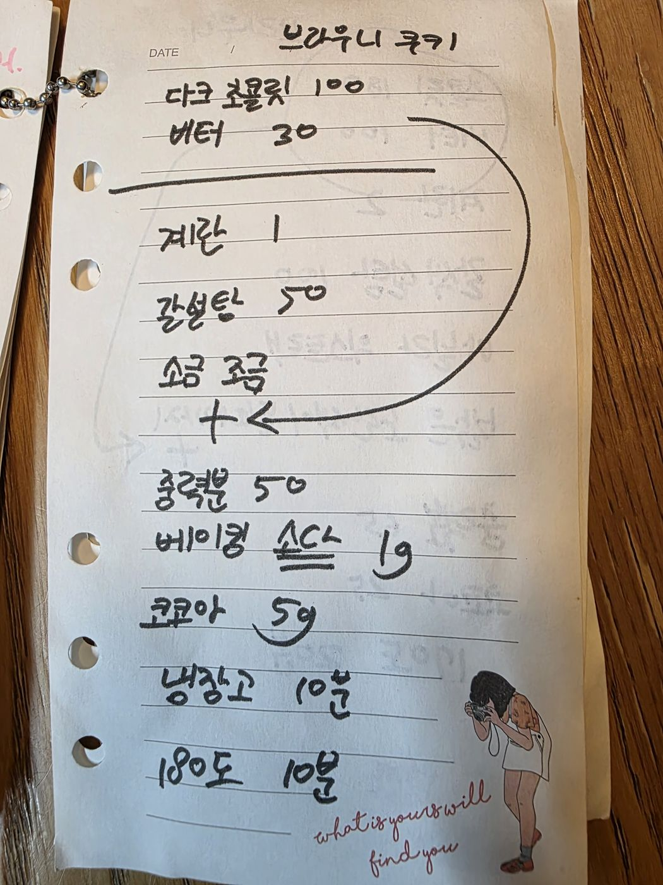

← 전체 레시피
쿠키
🍪 브라우니 쿠키
손으로 적은 노트를 그대로 옮긴 레시피입니다.
분량
1판
굽기
180℃ · 10분
📷 원본 노트 사진 보기
재료
녹이기
다크 초콜릿 100g
버터 30g
반죽
계란 1개
갈색설탕 50g
소금 조금
가루
중력분 50g
베이킹소다 1g
코코아파우더 5g
만드는 법
다크 초콜릿과 버터를 녹인다.
계란·갈색설탕·소금을 섞고 녹인 초콜릿을 넣는다.
가루류를 체 쳐 섞는다.
냉장고에서 10분 휴지한다.
180℃에서 10분 굽는다.

원본 노트 사진 — 탭하면 크게 볼 수 있어요